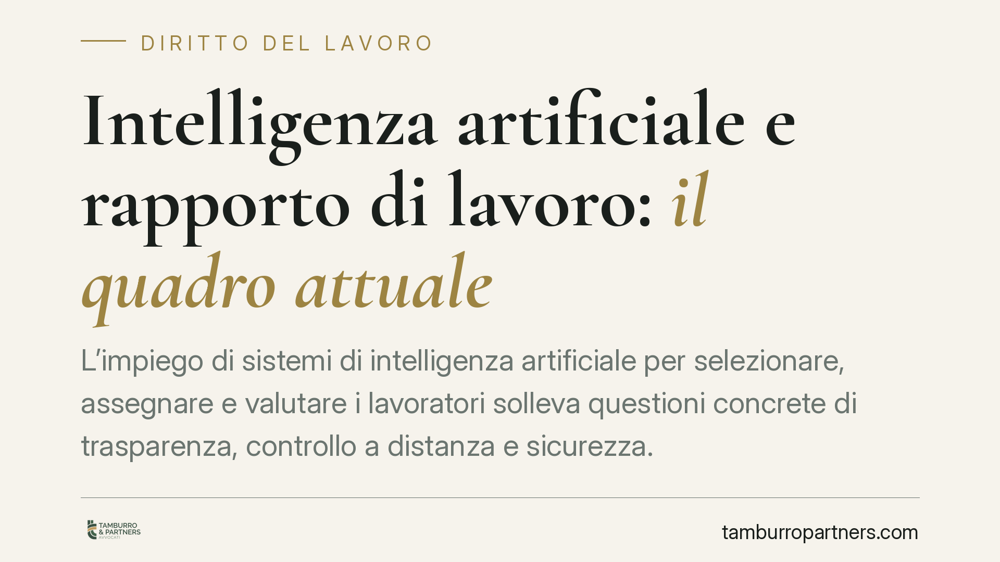

Intelligenza artificiale e rapporto di lavoro: il quadro attuale
L'impiego di sistemi di intelligenza artificiale per selezionare, assegnare e valutare i lavoratori solleva questioni concrete di trasparenza, controllo a distanza e sicurezza. Il quadro normativo è già oggi articolato, tra GDPR, Decreto Trasparenza e Statuto dei Lavoratori. Analizziamo cosa impone la disciplina vigente e come i datori di lavoro possono adeguarsi, nel rispetto dei diritti dei dipendenti.

Il contesto: l'IA entra nel rapporto di lavoro
I sistemi di intelligenza artificiale sono sempre più usati per gestire persone: screening dei curricula, assegnazione dei turni, misurazione della produttività, valutazione delle performance. Il tema non è futuribile. È già oggetto di obblighi precisi, che molti datori di lavoro ignorano o sottovalutano.
Prima di esaminare i profili operativi, una precisazione metodologica. Circolano riferimenti a presunti decreti di nuova introduzione sull'IA nel lavoro. Allo stato, non risulta pubblicato in Gazzetta Ufficiale un provvedimento organico e autonomo che codifichi una "riserva di umanità" nei rapporti di lavoro. Il principio per cui alcune decisioni devono restare affidate a una persona esiste già, ma va ricostruito a partire dalle norme vigenti. È su queste che occorre lavorare.
Inquadramento normativo: le fonti già applicabili
Il primo riferimento è l'art. 22 del Regolamento UE 2016/679 (GDPR). La norma riconosce all'interessato il diritto di non essere sottoposto a una decisione basata unicamente su un trattamento automatizzato che produca effetti giuridici o incida in modo analogo sulla sua persona. Il divieto non è assoluto: il paragrafo 2 prevede eccezioni quando la decisione è necessaria per la conclusione o l'esecuzione di un contratto, è autorizzata da una norma, oppure si fonda sul consenso esplicito. Anche in questi casi, però, devono essere garantite misure adeguate, incluso il diritto a ottenere l'intervento umano, a esprimere la propria opinione e a contestare la decisione.
Qui emerge la distinzione decisiva: l'intervento umano non può essere meramente formale. Non basta che una persona apponga una firma su un esito prodotto dall'algoritmo. Serve un vaglio effettivo e motivato, in cui il decisore umano possa discostarsi dall'output del sistema.
Il secondo riferimento è il D.lgs. 104/2022 (cosiddetto Decreto Trasparenza), che ha introdotto nel D.lgs. 152/1997 l'obbligo per il datore di informare il lavoratore sull'utilizzo di sistemi decisionali o di monitoraggio automatizzati deputati a fornire indicazioni rilevanti ai fini dell'assunzione, della gestione del rapporto, dell'assegnazione di compiti o della cessazione. L'informativa deve indicare logica di funzionamento, parametri e misure di controllo.
Il terzo riferimento è l'art. 4 della L. 300/1970 (Statuto dei Lavoratori), che disciplina i controlli a distanza. Gli strumenti da cui derivi la possibilità di controllare l'attività dei lavoratori possono essere installati solo per esigenze organizzative, produttive, di sicurezza o di tutela del patrimonio, previo accordo sindacale o autorizzazione dell'Ispettorato. Un software di IA che misura in continuo la produttività ricade in pieno in questa cornice.
Implicazioni pratiche
Per il datore di lavoro, l'uso dell'IA non è un fatto puramente tecnologico. Attiva simultaneamente tre corpi normativi: protezione dei dati, obblighi informativi e disciplina dei controlli. L'adozione di un sistema senza queste cautele espone a sanzioni, contenzioso e, nei casi di controllo illegittimo, a inutilizzabilità dei dati raccolti.
Va inoltre considerato il profilo della sicurezza. L'art. 2087 del Codice civile e il D.lgs. 81/2008 impongono di valutare tutti i rischi, compreso lo stress lavoro-correlato. Sistemi che impongono ritmi serrati, valutazioni opache o pressioni algoritmiche possono incidere sul benessere psicofisico e devono entrare nella valutazione dei rischi.
Per il lavoratore, la tutela si articola su più piani: il diritto a essere informato sulla logica del sistema, il diritto di contestare le decisioni automatizzate che lo riguardano e la possibilità di far valere l'illegittimità dei controlli condotti senza le garanzie dell'art. 4.
Cosa fare in concreto
- Mappate i sistemi di IA già in uso o in adozione, distinguendo quelli che incidono su assunzione, gestione, assegnazione dei compiti o cessazione del rapporto.
- Aggiornate le informative ai lavoratori ai sensi del Decreto Trasparenza, indicando logica, parametri e misure di controllo di ogni sistema.
- Verificate la base giuridica delle eventuali decisioni automatizzate e predisponete una procedura di intervento umano effettivo, non formale.
- Attivate le procedure dell'art. 4 (accordo sindacale o autorizzazione) prima di impiegare strumenti che consentano il monitoraggio della produttività.
- Integrate il rischio algoritmico nel Documento di Valutazione dei Rischi, considerando anche lo stress lavoro-correlato.
È opportuno affrontare l'adeguamento come un progetto trasversale, che coinvolga insieme le funzioni risorse umane, legale e IT.
Disclaimer
Contributo informativo a cura di Tamburro & Partners - Avv. Giuseppe Tamburro. Non costituisce parere legale.
Ogni storia di lavoro ha i suoi tempi.
Se gestisci HR e vuoi un confronto su contenzioso, ispezioni o licenziamenti, scrivi allo studio. Ti rispondiamo entro un giorno lavorativo.